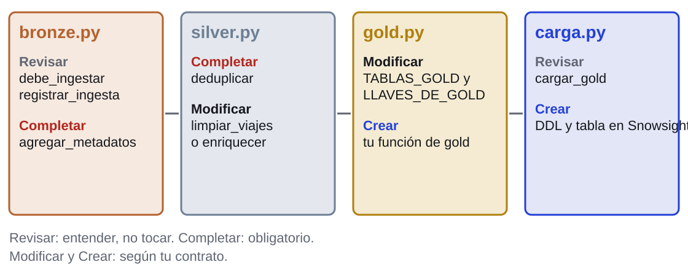

Big Data e Ingeniería de Datos
Clase 8 · Qué completas en tu pipeline y cómo lo llevas a producción
Posgrado UdeM · 24 nov 2026
Esta parte abre la clase 8. Problema: el pipeline que recibes ya corre de punta a punta, pero mezcla piezas que debes solo entender, dos que están incompletas a propósito y otras que cada equipo cambia según su pregunta. Si no se separan desde el principio, hay equipos que tocan lo que no debían y otros que no llegan a lo que sí era suyo. Herramienta: una lista por equipo con cuatro verbos (revisar, completar, modificar, crear), anclada a archivos y funciones reales. El camino a prod (rama, pull request, CI, merge, túnel) viene después, en la parte 2. Hoy el trabajo es por equipo; la única ayuda es el instructor. Tiempo: 1 min. Siguiente: ¿Qué de lo que ya tienes solo debes entender, y qué te toca escribir a ti?.
¿Qué de lo que ya tienes solo debes entender, y qué te toca escribir a ti?
Cuatro verbos: revisar, completar, modificar y crear.
Problema: el repositorio trae mucho código hecho y es fácil no saber dónde empieza tu trabajo. Pide a dos personas que digan, de memoria, qué función creen que es suya en el Taller 2; anota las respuestas y se contrastan al final de la parte. Lo que viene responde la pregunta con nombres de archivo y de función, no con generalidades. Tiempo: 1 min. Siguiente: Tu trabajo son cuatro verbos, cada uno con archivos concretos.
Tu trabajo son cuatro verbos, cada uno con archivos concretos
– Obligatorio: dos funciones.
Problema: «extender el pipeline» suena a una sola tarea y son cuatro de naturaleza distinta. Revisar es leer y poder explicar; si alguien lo cambia sin necesidad, rompe a los demás equipos. Completar son dos funciones que la casa dejó vacías a propósito, agregar_metadatos en bronze.py y deduplicar en silver.py, marcadas con # PENDIENTE(equipo); son iguales para todos los equipos. Modificar es lo que cada equipo cambia según el contrato: la capa, el archivo, la función y los nombres de sus tablas. Crear es lo nuevo: la columna, regla o agregado que responde la pregunta y la tabla en Snowflake. Herramienta: las cuatro tablas que siguen. Tiempo y orden: primero el mapa, luego cada verbo en ese orden. Una advertencia: la tabla de control, el límite y reprocesar ya están hechos; se leen, no se reescriben. Tiempo: 2 min. Siguiente: Cada verbo cae en un tramo distinto del pipeline, de bronze a Snowflake.
Cada verbo cae en un tramo distinto del pipeline, de bronze a Snowflake

Completar es igual para todos; modificar y crear dependen de tu contrato.
Problema: los verbos son abstractos hasta que se ponen sobre el pipeline que ya conocen. De izquierda a derecha están los cuatro pasos: bronze guarda el crudo con sus metadatos, silver lo limpia, gold responde una pregunta, y carga.py lo lleva a Snowflake. En bronze hay una cosa que se lee y una que se completa. En silver, deduplicar se completa; limpiar_viajes y enriquecer se modifican solo si la pregunta lo necesita. En gold se registra la tabla propia en TABLAS_GOLD y se escribe su función. En carga.py se lee cargar_gold y se crea el CREATE TABLE propio, que además se ejecuta a mano en Snowsight. Ojo con el color: el cobre es bronze, el gris azulado silver y el ocre gold; los verbos van por el color de la palabra (gris revisar, rojo completar, negro modificar, azul crear). Herramienta: este mapa se queda proyectado mientras se recorren las tablas por archivo. Tiempo: 2 min. Siguiente: Bronze y silver: dos funciones se completan, las demás se leen.
Bronze y silver: dos funciones se completan, las demás se leen
bronze debe_ingestar, registrar_ingesta
bronze _ingestar_tabla, leer_crudo
silver limpiar_viajes, enriquecer
Problema: ¿qué función es qué? Estado significa lo que trae hoy el repositorio. Resuelta: funciona y tiene pruebas. Completar: devuelve el DataFrame tal cual y lleva la marca # PENDIENTE(equipo); mientras la marca siga ahí, sus pruebas salen PENDIENTE. En bronze, agregar_metadatos devuelve df sin las cinco columnas de metadatos. debe_ingestar y registrar_ingesta ya están hechas: son la puerta de la tabla de control. _ingestar_tabla es la receta (puerta, crudo, leer_crudo, metadatos, escribir lote, registrar) y leer_crudo es donde se aplica el límite. En silver, deduplicar devuelve la tabla tal cual. limpiar_viajes y enriquecer están resueltas, pero son el lugar natural para una columna o regla nueva de tu pregunta; por eso dicen «modificar si tu contrato lo pide». Herramienta: esta tabla y la siguiente son la lista de trabajo; se pueden fotografiar. Error común: leer «Resuelta» como «no se puede mirar»: se mira, y mucho. Tiempo: 2 min. Siguiente: En gold y carga registras y creas; lo demás se lee.
En gold y carga registras y creas; lo demás se lee
carga TABLAS_A_CARGAR, DDL
Problema: gold no tiene huecos, y por eso a veces se cree que no es de nadie. Es de todos: cada equipo suma su tabla. TABLAS_GOLD es un diccionario que ya funciona con la tabla de la casa; tu tabla se suma ahí. Tu función es nueva: recibe el enriquecido y devuelve tu tabla. En carga.py, cargar_gold y la verificación del esquema con Athena se leen; TABLAS_A_CARGAR y el DDL se amplían con tu tabla. El código nunca crea la tabla en Snowflake: la creas tú, a mano, en Snowsight, una sola vez, con USE ROLE BIGDATA_DEV, USE WAREHOUSE BIGDATA_WH y USE DATABASE BIGDATA antes del CREATE. Las pruebas de agregar_metadatos y deduplicar ya existen en tests/; no hay que escribir pruebas nuevas. Herramienta: cada fila se vuelve una casilla en el checklist final. Error común: nombrar la tabla sin el nombre del equipo; dos equipos en la misma cuenta se pisan. Tiempo: 2 min. Siguiente: Revisar: la puerta de bronze pregunta a la tabla de control antes de trabajar.
Revisar: la puerta de bronze pregunta a la tabla de control antes de trabajar
def debe_ingestar(corrida, tabla, mes):
ya_esta_registrado = mes_ya_procesado(corrida, tabla, CAPA, mes)
if ya_esta_registrado:
return False
return True
def mes_ya_procesado(corrida, tabla, capa, mes, conexion=None):
if corrida.reprocesar:
return False
registros = consultar_control(corrida.entorno, tabla, capa, mes)
return len(registros) > 0
debe_ingestar invierte la pregunta; mes_ya_procesado ya trae la regla de reprocesar.
Problema: si bronze corre dos veces para enero, enero queda dos veces. La puerta evita eso. debe_ingestar está en bronze.py y mes_ya_procesado en herramientas/control.py; ninguna se toca. La lectura: si ya hay un registro de bronze para (tabla, mes) y no se pidió reprocesar, se salta; en cualquier otro caso se ingesta. Con reprocesar=true no se consulta nada, siempre se ingesta. Pregunta de comprensión para el equipo: ¿qué devuelve debe_ingestar con reprocesar=true y un registro existente? True: ingesta. registrar_ingesta, la otra pieza, solo se llama después de escribir el lote; si la escritura falla no queda registro y el mes se puede reintentar. Para ejecutarlo: cd ~/bigdata, make correr PASO=bronze. Salida esperada en la segunda corrida sin reprocesar: SE SALTÓ. Error común: creer que SE SALTÓ es un fallo; es la puerta funcionando. Tiempo: 2 min. Siguiente: El límite corta solo en bronze; reprocesar solo abre la puerta.
El límite corta solo en bronze; reprocesar solo abre la puerta
reprocesar=false con registro
Lote nuevo, sin consultar
Problema: dos reglas que parecen detalles y explican casi todas las cifras raras. Primera, el límite: se aplica solo en leer_crudo, justo después de leer el archivo de la fuente; por eso bronze guarda 1 000 filas de viajes por lote, 265 de zonas (la tabla completa) y 31 de clima (los días de enero). Silver y gold leen todo lo que haya en bronze, sin límite. Segunda, reprocesar: con reprocesar=false un paso que ya corrió se salta y no hay lote nuevo; con reprocesar=true bronze escribe otro lote del mismo mes sin borrar el anterior. Bronze es solo de agregar. Herramienta: pipeline.yaml (reprocesar: true) o el parámetro del comando o del formulario del DAG; el del comando gana. Lo que se espera: dos lotes por tabla en bronze y, hasta que completes las dos funciones, silver con el doble. Error común: pensar que reprocesar borra lo anterior; no borra nada. Tiempo: 2 min. Siguiente: Revisa en silver, gold y carga lo que multiplica, valida y escribe.
Revisa en silver, gold y carga lo que multiplica, valida y escribe
Une zonas y clima; multiplica
Enriquece, valida, escribe
Solo exige que no esté vacía
Problema: el ×8 de gold no se explica sin entender enriquecer. enriquecer une los viajes con las zonas (por PULocationID) y con el clima (por la fecha) con left joins: no pierde viajes, pero si zonas o clima traen cada fila dos veces, cada viaje sale dos veces por cada una. Con dos copias de cada tabla: ×2 · ×2 · ×2. _gold_de_una_tabla lee las tres tablas de silver, las enriquece, llama a tu función, valida con quality.validar (en gold solo comprueba que la tabla no esté vacía; por eso gold no detecta duplicados) y reemplaza el mes en gold. cargar_gold reemplaza ese mes en Snowflake con los Parquet de gold, después de verificar el esquema con Athena. con_control es el envoltorio que consulta la puerta y anota la fila al terminar. Error común: ejecutar cargar_snowflake sin haber creado la tabla; el error imprime el SQL exacto para correr en Snowsight. Tiempo: 2 min. Siguiente: 8 000.
Filas que lee gold tras reprocesar sin deduplicar: 1 000 viajes por 2 copias de cada una de las tres tablas.
Clase 7: reprocesar=true una vez, mes 2024-01, límite 1 000
Problema: nadie recibe un error y la cifra de gold queda ocho veces inflada. Primero, bronze: reprocesar escribe un segundo lote y deja 1 000, 265 y 31 filas por lote. Segundo, silver: como deduplicar no deduplica y lee todos los lotes, guarda 2 000 viajes, 530 zonas y 62 días de clima. Tercero, gold: enriquecer une esas tres tablas y cada viaje se repite 2 · 2 · 2 = 8 veces; gold lee 8 000 filas para armar sus 5 filas de resultado, y la suma de viajes sale ocho veces mayor. El pipeline no falla porque cada paso, por separado, está bien hecho. Herramienta: las dos funciones que completas atacan el origen del problema, no el síntoma. Siguiente paso de la clase: ver qué le falta hoy a una fila de bronze. Tiempo: 1 min. Siguiente: Hoy una fila de bronze no trae ninguna de las cinco columnas de metadatos.
Hoy una fila de bronze no trae ninguna de las cinco columnas de metadatos
bronze.fhvhv tras agregar_metadatos sin completar
Problema: sin _hash_fila, silver no puede saber qué filas ya vio. Hoy agregar_metadatos devuelve df tal cual: bronze guarda solo las columnas originales y no sabe de qué lote ni de qué archivo vino cada fila. Las cinco columnas, en este orden, son COLUMNAS_METADATOS: _fecha_ingesta, _id_lote, _hash_fila, _fuente y _archivo_origen. La más importante es _hash_fila, el SHA-256 de la fila con sus valores originales: dos filas con los mismos valores tienen el mismo hash, aunque vengan de lotes distintos. Herramienta: hash_fila, que ya existe en herramientas/capas.py y no hay que escribir. Error común: calcular el hash después de agregar las otras columnas de metadatos; el hash cambiaría con cada lote y nunca coincidiría. Se calcula solo sobre las columnas originales. Tiempo: 1 min. Siguiente: Completar en bronze: calcula el hash con las columnas originales y agrega las cinco columnas.
Completar en bronze: calcula el hash con las columnas originales y agrega las cinco columnas
from pyspark.sql.functions import lit
def agregar_metadatos(df, fuente, archivo_origen, id_lote, fecha_ingesta):
originales = df.columns
con_hash = df.withColumn("_hash_fila", hash_fila(originales))
return con_hash.select(
*originales,
lit(fecha_ingesta).alias("_fecha_ingesta"),
lit(id_lote).alias("_id_lote"),
"_hash_fila",
lit(fuente).alias("_fuente"),
lit(archivo_origen).alias("_archivo_origen"),
)
El import va arriba del archivo. Borra la marca # PENDIENTE(equipo).
Problema: escribir la función de modo que dos ingestas del mismo archivo den el mismo hash fila por fila. Herramienta: hash_fila(df.columns) y las columnas en el orden de COLUMNAS_METADATOS. Este código es la forma de la solución, el equipo la escribe primero en el cuaderno 01_construir_paso_a_paso (celda 18), la prueba con probar_mis_funciones y luego la copia a src/pipeline/bronze.py. Línea 4: se guardan los nombres de las columnas originales antes de agregar nada. Línea 5: el hash se calcula primero, solo con ellas. Líneas 7 a 11: las cinco columnas, en el orden exacto. El import de lit va con los demás imports de bronze.py; hash_fila ya está importado ahí. No se ejecutó en esta preparación (no hay Spark local): se comprueba con make test y con el cuaderno. Errores comunes: «AnalysisException: cannot resolve» por escribir mal un nombre de columna; el orden de columnas distinto al de COLUMNAS_METADATOS (la primera prueba lo verifica); dejar la marca PENDIENTE, con lo que las pruebas se omiten en lugar de correr. Tiempo: 2 min. Siguiente: Completar en silver: deja una sola fila por _hash_fila y borra la marca.
Completar en silver: deja una sola fila por _hash_fila y borra la marca
def deduplicar(df):
"""Deja UNA fila por `_hash_fila`."""
return df.dropDuplicates(["_hash_fila"])
# Orden obligatorio:
# 1. agregar_metadatos en bronze.py
# 2. deduplicar en silver.py
# 3. resetear dev (los lotes viejos no traen _hash_fila)
# 4. make correr PASO=bronze y luego PASO=silver
Sin _hash_fila en bronze, deduplicar falla: por eso el orden.
Problema: silver lee todos los lotes del mes; si dos lotes traen las mismas filas, hay que dejar una. Herramienta: dropDuplicates sobre _hash_fila. Dos filas con el mismo hash tienen exactamente los mismos valores originales, así que no importa cuál se conserva. Una tabla sin repetidos queda igual y las columnas se conservan: son tres de las pruebas de tests/test_equipo_silver.py. Dependencia: deduplicar necesita que bronze haya agregado _hash_fila. Los lotes que se escribieron antes de completar agregar_metadatos no traen esa columna: hay que resetear el entorno de dev con el DAG resetear_entorno y volver a correr bronze y silver. Comandos: cd ~/bigdata, make correr PASO=bronze REPROCESAR=false, y después PASO=silver. Errores comunes: «cannot resolve _hash_fila»: bronze no agregó la columna, o quedó un lote viejo; olvidar borrar la marca PENDIENTE. No se ejecutó en esta preparación (no hay Spark local). Tiempo: 2 min. Siguiente: Con la deduplicación bien hecha, reprocesar ya no multiplica nada.
Con la deduplicación bien hecha, reprocesar ya no multiplica nada
Problema: ¿cómo sé que quedó bien? Con una cifra que no cambie al reprocesar. Bronze nunca borra: tras reprocesar tiene dos lotes con 1 000, 265 y 31 filas cada uno. Silver, con deduplicar bien, deja 1 000, 265 y 31, no 2 000, 530 y 62. Gold lee 1 000 filas del enriquecido, no 8 000, y escribe sus 5 filas. Importante: las columnas «Sin completar» son cifras medidas en el ensayo de la clase 7; las de «Bien hecho» son la consecuencia lógica de deduplicar y deben confirmarse en la corrida del equipo. Herramienta: Athena, con las consultas de curso/clase07/athena/02_duplicados_y_conciliacion.sql (puntos de control B, C y D), y la tabla de control en Snowsight. En la fila de gold de la tabla de control, FILAS cuenta filas de gold; los viajes se comparan con SUM(VIAJES). Error común: comparar viajes de gold con FILAS de la tabla de control: son cosas distintas. Tiempo: 2 min. Siguiente: Lo que modificas lo fija tu contrato: capa, archivo, función y nombres.
Lo que modificas lo fija tu contrato: capa, archivo, función y nombres
limpiar_viajes, enriquecer
Problema: cada equipo firmó en la sección 4 del contrato una capa, un archivo y una función; esto es el punto donde esa firma se vuelve código. Abre tu contrato.md: la fila «Archivo y función donde va» dice dónde. Si es silver, el cambio va en limpiar_viajes o en enriquecer (el paso gold usa enriquecer, así que el cambio sigue viviendo en silver.py). Si es gold, es tu función. En ambos casos tu tabla de gold necesita un nombre que lleve el de tu equipo, por ejemplo lluvia_norte_rango_distancia, y esa misma tabla en Snowflake es BIGDATA.DEV.LLUVIA_NORTE_RANGO_DISTANCIA. Si agregas una columna a una tabla que ya existe en Snowflake, la carga se detiene con ColumnasDistintas y dice el ALTER TABLE. Herramienta: el contrato como lista de verificación. Si el contrato dice algo que el pipeline no soporta tal cual (por ejemplo, distancia nula como «desconocido», que el filtro distancia_mi > 0 ya descarta), se ajusta hoy con el instructor. Tiempo: 2 min. Siguiente: Tu tabla se registra en dos sitios con el mismo nombre de equipo.
Tu tabla se registra en dos sitios con el mismo nombre de equipo
# gold.py (ejemplo ilustrativo)
TABLAS_GOLD = {
"tarifa_por_milla_barrio": tarifa_por_milla_por_barrio,
"lluvia_norte_rango_distancia": rango_distancia_lluvia_norte,
}
# carga.py: TABLAS_A_CARGAR suma {"gold": "lluvia_norte_rango_distancia",
# "ddl": DDL_LLUVIA_NORTE}
Mismo nombre en dos sitios; la función es un nombre inventado.
Problema: dos sitios deben hablar del mismo nombre, y si uno difiere el pipeline falla o, peor, no carga nada. Ejemplo ilustrativo con el equipo del contrato modelo: el nombre de la función es inventado; el equipo usa el suyo. Línea 4: la tabla de gold, con el nombre del equipo, apunta a tu función. Línea 6: en carga.py, TABLAS_A_CARGAR, que es una lista, suma la entrada con su DDL. El DDL debe tener las mismas columnas que la tabla de gold y tipos compatibles: date es DATE, string es VARCHAR, bigint o int es NUMBER(38,0), double es FLOAT. Después, a mano, en Snowsight: USE ROLE BIGDATA_DEV; USE WAREHOUSE BIGDATA_WH; USE DATABASE BIGDATA; y el CREATE TABLE. Si la tabla falta, cargar_snowflake se detiene e imprime ese SQL. Error común: usar ACCOUNTADMIN, que no puede crear en BIGDATA.DEV. Herramienta: el mismo nombre de equipo en TABLAS_GOLD (diccionario), en TABLAS_A_CARGAR (lista) y en la tabla de Snowflake. Tiempo: 2 min. Siguiente: Creas tu lógica y tu tabla propia en Snowsight.
Creas tu lógica y tu tabla propia en Snowsight
– Tu columna, regla o agregado.
Problema: una pregunta bien hecha se pierde si la lógica queda ambigua o la tabla no existe. Lógica: pequeña y verificable; es mejor una columna bien definida que tres a medio hacer. Define por escrito qué pasa con los nulos y con los valores justo en el umbral (en el contrato modelo, 3.0 y 8.0 millas son «medio»). Ojo: con distancia nula, limpiar_viajes ya descarta la fila (distancia_mi > 0); la decisión escrita debe reflejar lo que el pipeline hace de verdad. No hay pruebas nuevas que escribir: las de agregar_metadatos y deduplicar ya existen en tests/test_equipo_bronze.py y test_equipo_silver.py, y make test corre todas. Tabla: se crea una vez, a mano, en Snowsight. Herramienta: la tabla de control en Snowsight y las consultas de Athena para comprobar la cifra. Tiempo: 2 min. Siguiente: La rúbrica pesa más en costo y calidad de datos.
La rúbrica pesa más en costo y calidad de datos
Problema: saber desde hoy qué se califica. La rúbrica vale 100 puntos y tiene seis criterios. Criterio 1 (10): la pregunta y el contrato. Criterio 2 (20): el cambio del equipo, es decir agregar_metadatos y deduplicar con sus pruebas del equipo en OK, y una tabla de gold propia correcta y legible, con las decisiones (umbrales, nulos) escritas; si una de las dos funciones sigue PENDIENTE, el nivel baja a «en proceso». Criterio 3 (5): el PR revisado por otro integrante y fusionado, con los cinco checks en verde; no se escriben pruebas nuevas. Criterio 4 (20): corrida completa de pipeline_taxi desde Airflow, con las cuatro tareas de Glue en success y el cambio propio. Criterio 5 (20): la conciliación entre bronze, silver, gold y Snowflake, y la respuesta a la pregunta leída en Snowflake. Criterio 6 (25): costo y calidad de datos; incluye el informe de cómo aseguraste que no llegaran duplicados de silver a gold, con las consultas de evidencia (la slide que sigue), y la comparación de costo entre tipos de job. La entrega final es el domingo 29 de noviembre a las 23:59, con el release t2-entrega. Error común: tener los pasos hechos y no la evidencia (capturas de la cuenta del anfitrión). Tiempo: 2 min. Siguiente: Tu informe explica cómo aseguraste que no llegaran duplicados de silver a gold.
Tu informe explica cómo aseguraste que no llegaran duplicados de silver a gold
-- Silver: filas contra hashes distintos (deben ser iguales)
SELECT COUNT(*), COUNT(DISTINCT _hash_fila)
FROM bigdata_lake.prod_silver_fhvhv WHERE mes = '2024-01';
-- 19650023 | 19650023
-- Silver no tiene viajes: COUNT(*) de silver contra SUM(viajes) de gold
SELECT SUM(viajes) FROM bigdata_lake.prod_gold_tarifa_por_milla_barrio
WHERE mes = '2024-01'; -- 19650023
SELECT SUM(VIAJES) FROM BIGDATA.PROD.TARIFA_POR_MILLA_BARRIO;
-- Con duplicados: 157200184 contra 19650023 (×8)
Gold sigue con las mismas filas aunque haya duplicados; lo que se infla es viajes. En el taller: dev_ en lugar de prod_ y BIGDATA.DEV.<TABLA_DE_SU_EQUIPO>.
Problema: gold no avisa cuando silver trae duplicados. Las 744 filas de gold son las mismas con o sin duplicados, y lo que se infla es la columna viajes; por eso mirar el número de filas no sirve. Ejemplo medido en prod: tras reprocesar sin deduplicar, SUM(VIAJES) en Snowflake dio 157.200.184 contra 19.650.023, una cifra ×8 contra la cifra limpia. Herramienta: dos evidencias para el informe. Primera, en silver, COUNT(*) contra COUNT(DISTINCT _hash_fila): si difieren, deduplicar no hizo su trabajo. Segunda, como silver no tiene columna viajes, se compara COUNT(*) de silver contra SUM(viajes) de gold y de Snowflake: deben coincidir en las tres capas. Con silver sin deduplicar, viajes_gold dividido filas_silver da ×4, porque silver duplica cada tabla y el cruce multiplica otra vez; el ×8 es contra la cifra limpia: 157.200.184 = 8 × 19.650.023 = 4 × 39,3 millones de filas de silver duplicado. En el taller: dev_ en lugar de prod_ y BIGDATA.DEV.<TABLA_DE_SU_EQUIPO>. Dónde: Athena, workgroup bigdata-wg, para silver y gold; Snowsight para la tabla cargada. El informe debe pegar las consultas, las cifras y una frase que explique por qué cuadran. Cuenta para el criterio 6, que vale 25 puntos. Error común: concluir que no hay duplicados porque gold tiene las filas esperadas. Tiempo: 2 min. Siguiente: Compruebas el trabajo con make test y con las pruebas del equipo desde el cuaderno.
Compruebas el trabajo con make test y con las pruebas del equipo desde el cuaderno
# En la terminal del Code Editor
cd ~/bigdata
make test
# En el cuaderno 01_construir_paso_a_paso
from pipeline.herramientas.equipo import probar_mis_funciones
probar_mis_funciones(
agregar_metadatos=agregar_metadatos, deduplicar=deduplicar
)
Cada prueba sale OK, PENDIENTE o FALLA. Un PENDIENTE no deja make test en rojo.
Problema: «las pruebas pasan» puede significar que no corrieron. Mientras la marca # PENDIENTE(equipo) siga en una función, su prueba sale omitida con el motivo PENDIENTE, y make test termina en verde. Por eso hay dos controles. Entrada 1: cd ~/bigdata y make test; corre ruff y pytest con la opción -rs, que muestra el motivo de cada prueba omitida. Aquí no se escriben pruebas nuevas. Salida esperada cuando está bien: las pruebas de tests/test_equipo_bronze.py y test_equipo_silver.py sin ninguna omitida ni FAILED. Entrada 2: en el cuaderno, probar_mis_funciones corre las mismas pruebas con tus funciones puestas en el proceso y las lista una por una (OK, PENDIENTE o FALLA) con un Resumen. Si el cómputo del pipeline.yaml es de Glue, usar_mis_funciones falla a propósito: las funciones del cuaderno no viajan a Glue; hay que copiarlas a los .py. Después, las cifras en Athena: bronze, silver y gold con las consultas del archivo 02_duplicados_y_conciliacion.sql. Errores comunes: «no encuentro las pruebas del equipo»: no estás en la raíz del repositorio; ruff format falla: corre ruff format antes del commit; marca PENDIENTE olvidada. Tiempo: 2 min. Siguiente: Cada equipo comprueba su checklist.
Cada equipo comprueba su checklist
Revisé puerta, límite y reprocesar.
Silver 1000/265/31; gold lee 1000.
Cambio donde dice el contrato.
make test verde, sin ningún PENDIENTE.
Mi tabla carga en Snowflake.
Problema: llegar al taller sin saber qué falta. Cada equipo recorre esta lista en voz alta, en la pantalla del anfitrión, y marca lo que está hecho y lo que no. Lo que se marca como pendiente es el plan del día: el avance se revisa en clase con el instructor, no tiene que estar terminado, pero sí se debe poder mostrar qué funciona y qué falta. Fuente de cada casilla: 1, las tablas de revisar; 2, las dos slides de completar; 3, la tabla de cifras; 4, la slide de modificar; 5, la slide de crear, con make test en verde y sin ningún PENDIENTE; 6, el registro de la tabla propia. Recuerden apagar las cuentas al terminar cada sesión (make airflow-off y make airflow-local-down). Si alguien no puede abrir el Code Editor o el fork, se resuelve ahora con el instructor. Error común: marcar la casilla 3 sin haber reprocesado; sin reprocesar no hay cómo saberlo. Tiempo: 2 min. Siguiente: ¿Cómo llega el pipeline a prod sin que nadie lo rompa desde su Code Editor?.
¿Cómo llega el pipeline a prod sin que nadie lo rompa desde su Code Editor?
Rastro, revisión y un despliegue que no es manual.
Problema: todo lo hecho hasta aquí fue en dev, y desde el Code Editor no se debe poder correr prod. Pide a dos personas que propongan, de memoria, un mecanismo que lo impida sin depender de que todos se porten bien; anota las respuestas. Se contrastan al final con la escalera: lo que sube a prod es lo que está en main, no lo que tienes en tu editor. Herramienta: pull request, checks automáticos, aprobación de otra persona y un Deploy que ejecuta GitHub Actions, no una persona. Tiempo: 1 min. Siguiente: La escalera de dev a prod tiene siete peldaños, y prod solo se alcanza por PR y CI/CD.
La escalera de dev a prod tiene siete peldaños, y prod solo se alcanza por PR y CI/CD

Cada peldaño cuesta más que el anterior: por eso se prueba abajo.
Problema: sin un orden claro, la gente prueba por primera vez en lo más caro. Herramienta: la escalera de pruebas, de lo barato a lo caro. Peldaños 1 a 4, en dev desde el Code Editor: notebook y make test (segundos), make correr con code_editor (minutos), make correr con glue_small (minutos y centavos) y Airflow del Code Editor. La línea punteada separa dev de prod. Peldaños 5 a 7, solo por PR y CI/CD: pull request y checks, merge y Deploy, y el DAG en la VM. Cada peldaño debe pasar antes del siguiente. Hoy ya estamos arriba del cuarto; lo que sigue son los tres últimos más lo que prod necesita aparte: tablas y permisos. Idea que se repite toda la parte: prod no lee tu editor, lee main. Tiempo: 2 min. Siguiente: Antes de empezar, todo el equipo corre make migrar-clase07 desde main.
Antes de empezar, todo el equipo corre make migrar-clase07 desde main
cd ~/bigdata
git switch main
git pull
make migrar-clase07
# Si git switch main falla con «Your local changes would be overwritten»:
git stash
# y repites desde git switch main
En pantalla: sin errores al final de make migrar-clase07. Sin él, el reset falla con «Schema BIGDATA.CONTROL_DEV does not exist».
Problema: en el ensayo el reset de prod falló con «Schema BIGDATA.CONTROL_DEV does not exist» y costó mucho tiempo, porque varios Code Editors no tenían la migración de la clase 7. Herramienta: un prerrequisito de todo el equipo, antes de tocar nada: situarse en main, traer lo último y migrar. Entrada: las cuatro líneas de arriba, una por una, en la terminal del Code Editor. Salida esperada: git pull trae los commits nuevos (o «Already up to date») y make migrar-clase07 termina sin error; crea lo que falte de CONTROL_DEV y de los esquemas de la clase 7. Este paso se repite en el checklist final. Error común: el Code Editor quedó en una rama vieja y «git switch main» falla con «Your local changes would be overwritten by checkout»: se corre git stash, se repite desde git switch main y, si se quiere recuperar el trabajo, git stash pop después. No se sigue hasta que make migrar-clase07 termine bien. Tiempo: 3 min. Siguiente: Una rama por persona con un cambio pequeño en src/ y make test en verde.
Una rama por persona con un cambio pequeño en src/ y make test en verde
cd ~/bigdata
git switch main && git pull
git switch -c clase08-a-prod-<tu-nombre>
# Comentario al final de src/pipeline/gold.py y guarda
make test
git add src/pipeline/gold.py
git commit -m "Clase 8: cambio pequeño para el camino a prod"
git push -u origin clase08-a-prod-<tu-nombre>
En pantalla: «Switched to a new branch», make test sin FAILED y una URL para crear el pull request.
Dónde: la terminal del Code Editor. Problema: no se cambia main directamente; todo entra por una rama y un pull request. Una rama por persona, creada una sola vez, para que no choquen entre sí en el fork del anfitrión. El cambio es pequeño a propósito, pero tiene que estar dentro de src/: el workflow Deploy solo enciende la VM de prod si el push cambia airflow/ o src/; con un cambio fuera de esas carpetas, el DAG de prod no aparece. Entrada: make test (ruff y pytest, lo mismo que correrá GitHub), git add archivo por archivo (no git add -A, para no subir un .env por accidente), commit y push -u, que enlaza la rama con la remota. Salida esperada: «Switched to a new branch», el resumen de objetos del push y una URL que ofrece abrir el pull request. Errores comunes: «Your local changes would be overwritten» (git stash, ver la slide anterior); «Authentication failed» (gh auth login); «Please tell me who you are» (git config --global user.name y user.email, una sola vez). Quien ya tiene su cambio real del Taller en src/ puede usarlo en vez del comentario. Tiempo: 3 min. Siguiente: El pull request va a main del anfitrión y sus cinco checks quedan en verde.
El pull request va a main del anfitrión y sus cinco checks quedan en verde
Compare & pull request a main.
Cinco checks, unos 2 min.
Ruff, DAGs y tres de Terraform en verde.
Si uno falla: Details, corrige, push.
Dónde: GitHub, en el navegador. Problema: un cambio sin revisión ni verificación automática no debe llegar a main. Herramienta: el pull request y el CI. Hay que abrirlo hacia main del fork del anfitrión (GitHub a veces propone el repositorio del curso: se cambia la base). Al crearlo arrancan solos cinco checks: Ruff y pytest; Integridad de los DAGs; Terraform fmt y validate aws; Terraform fmt y validate snowflake; Terraform plan aws. Medida del ensayo: el PR #25 del 23 de noviembre tardó unos 2 minutos en los checks. En pantalla: la lista de checks bajo el PR, cada uno con un círculo amarillo que pasa a visto verde; los cinco en verde habilitan el botón de merge. Si uno sale rojo, Details, leer el error, corregir en la rama y git push: el PR se actualiza solo. Error común: Terraform plan aws falla si el fork no tiene los secrets AWS_ROLE_ARN y TF_STATE_BUCKET (make secrets); el instructor ayuda. Tiempo: 3 min. Siguiente: Otra persona aprueba, solo el anfitrión hace el merge y el Deploy queda en verde.
Otra persona aprueba, solo el anfitrión hace el merge y el Deploy queda en verde
Otra persona: Files changed y Approve.
Solo el anfitrión: Merge y Confirm merge.
En Actions, espera el Deploy en verde.
La VM de prod queda encendida.
Dónde: GitHub. Problema: nadie debe aprobar su propio cambio ni publicar sin revisión. Herramienta: la segunda barandilla después del CI. Otra persona abre Files changed y hace clic en Approve. El merge lo hace solo el anfitrión; los demás abren su PR y revisan el del anfitrión. Al hacer merge, el cambio entra a main y el workflow Deploy se dispara solo: aplica Terraform con guardia de destrucción (aborta si el plan elimina algo), empaqueta src, sincroniza dags/, code/ y framework/ en S3 y, si el push cambió airflow/ o src/, enciende la VM de Airflow de prod. En pantalla: pestaña Actions con el workflow Deploy en amarillo y luego en verde; al final, la VM de prod queda encendida. Error común: el Deploy en rojo por falta de secrets; en ese caso la VM no se enciende y no se sigue. Tiempo: 2 min. Siguiente: Con la VM encendida, el anfitrión corre make actualizar-vm para dejarla lista.
Con la VM encendida, el anfitrión corre make actualizar-vm para dejarla lista
cd ~/bigdata
make actualizar-vm
# Primera vez: unos 8 min (construye la imagen); después, ~1 min.
# Repite si el merge cambió airflow/docker-compose.yaml o airflow/vm/
En pantalla: el script avanza y termina sin error. Deja el secreto bigdata/snowflake_prod y reinicia Airflow de prod.
Problema: tras el Deploy la VM está encendida, pero todavía no apunta al secreto de Snowflake de prod: sin este paso, cargar_snowflake falla. Herramienta: make actualizar-vm, que deja la VM con el secreto bigdata/snowflake_prod y reinicia Airflow de prod. Lo corre el anfitrión (o el instructor) la primera vez, con la VM encendida. Medida del ensayo: unos 8 minutos la primera vez, porque construye la imagen; alrededor de 1 minuto las siguientes. Hay que repetirlo cada vez que el merge cambie airflow/docker-compose.yaml o algo dentro de airflow/vm/: en el ensayo hubo que repetirlo porque el PR #25 cambió esos archivos. Salida esperada: el script termina sin error y Airflow de prod reinicia. Mientras tarda, se avanza con las tablas de Athena. Error común: correrlo con la VM apagada; se espera a que el Deploy la encienda (unos 2 minutos). Tiempo: 2 min. Siguiente: Apagas el Airflow de dev y abres el túnel a prod por el mismo puerto 8080.
Apagas el Airflow de dev y abres el túnel a prod por el mismo puerto 8080
cd ~/bigdata
make airflow-local-down
make airflow-tunel
# La terminal queda ocupada: abre otra con Terminal > New Terminal.
En pantalla: el túnel imprime una URL y no devuelve el cursor. Esa terminal se queda abierta.
Problema: la VM de prod no tiene entrada pública; su interfaz solo se alcanza por un túnel desde el Code Editor. Y el Airflow de dev y el de prod usan el mismo puerto 8080, así que primero se apaga el de dev. Entrada: make airflow-local-down y luego make airflow-tunel. Salida esperada: el túnel imprime la URL a abrir; la terminal queda ocupada, se deja abierta y se abre otra con Terminal > New Terminal. Si la VM no está encendida: make airflow-on. Errores comunes (del borrador de la clase 7, no se reprodujeron en el ensayo): «El puerto 8080 está ocupado» significa que el Airflow de dev sigue encendido; «La instancia está stopped» pide make airflow-on; «No existe la instancia bigdata-airflow» pide make airflow-habilitar, una sola vez. Solo el anfitrión y el instructor abren el túnel; el resto sigue en el proyector. Tiempo: 2 min. Siguiente: Entras a Airflow de prod con admin y reconoces dos DAGs fantasma que se ignoran.
Entras a Airflow de prod con admin y reconoces dos DAGs fantasma que se ignoran
En otra terminal: make airflow-password.
Abre la URL del túnel y entra como admin.
Ubica pipeline_taxi y resetear_entorno.
Ignora hola_airflow e ingesta_mensual.
Problema: ¿cómo se sabe que se está en el Airflow de prod y no en el de dev? Herramienta: la contraseña. En otra terminal: cd ~/bigdata y make airflow-password; imprime «Usuario: admin» y «Contraseña: ...», que es distinta a la de dev. La interfaz de prod usa SimpleAuthManager con esa contraseña. En pantalla: la lista de DAGs con pipeline_taxi y resetear_entorno, y además dos DAGs fantasma, hola_airflow e ingesta_mensual. Son solo registros viejos en la base de Airflow de la VM, no son archivos: se ignoran, no se borran ni se activan. El encabezado de cada tarea dice PROD. Errores comunes: la pantalla en blanco (se abrió la URL de dev y no la del túnel); «Invalid or Expired Auth Token» (se vuelve a abrir la URL del túnel). Tiempo: 2 min. Siguiente: Creas en Athena las ocho tablas prod_ reemplazando ENTORNO por prod.
Creas en Athena las ocho tablas prod_ reemplazando ENTORNO por prod
Abre 01_tablas.sql; workgroup bigdata-wg, base bigdata_lake.
Reemplaza <ENTORNO> por prod y <CUENTA> por tu ID.
Ejecuta una a una las 8 sentencias CREATE.
SHOW TABLES IN bigdata_lake: ocho prod_.
Dónde: la consola de Athena. Problema: las tablas prod_ no existen todavía, y sin ellas no se puede validar nada. Herramienta: el archivo curso/clase07/athena/01_tablas.sql, con dos marcadores: <ENTORNO> se reemplaza por prod y <CUENTA> por el ID de la cuenta AWS. Son 8 sentencias CREATE EXTERNAL TABLE: prod_bronze_fhvhv, prod_bronze_clima, prod_bronze_taxi_zones, prod_silver_fhvhv, prod_silver_clima, prod_silver_taxi_zones, prod_gold_tarifa_por_milla_barrio y prod_crudo_fhvhv. Workgroup bigdata-wg y base bigdata_lake. En pantalla: el editor de consultas con el workgroup seleccionado arriba a la derecha y, tras cada sentencia, «Query successful». Se ejecutan de una en una, no todas pegadas. Para comprobarlo: SHOW TABLES IN bigdata_lake debe listar las ocho con prefijo prod_. Error común: dejar un marcador sin reemplazar, que da un error de ruta o de nombre; se usa Ctrl+F y reemplazar todo. Tiempo: 3 min. Siguiente: Primero te das el rol BIGDATA_PROD, porque ACCOUNTADMIN no puede crear en PROD.
Primero te das el rol BIGDATA_PROD, porque ACCOUNTADMIN no puede crear en PROD
-- Snowsight, rol ACCOUNTADMIN
SELECT CURRENT_USER();
GRANT ROLE BIGDATA_PROD TO USER "<tu usuario>";
-- Usuario entre comillas, en minúsculas, como lo devolvió CURRENT_USER().
-- No uses IDENTIFIER($yo) ni GRANT OWNERSHIP.
En pantalla: «Statement executed successfully». Con IDENTIFIER($yo) salió «Object does not exist».
Problema: en Snowflake la tabla de prod no la crea el pipeline: se crea a mano, y el obstáculo es de permisos. BIGDATA_PROD es el rol de Airflow en la VM y no está asignado a ningún usuario de Snowsight; y ACCOUNTADMIN no tiene CREATE TABLE en BIGDATA.PROD, ese permiso solo lo tiene BIGDATA_PROD. Herramienta: darse a uno mismo el rol BIGDATA_PROD con ACCOUNTADMIN. Entrada, en Snowsight, con rol ACCOUNTADMIN: primero SELECT CURRENT_USER(); para ver el usuario tal cual (en minúsculas), y luego el GRANT con ese nombre entre comillas dobles. Salida esperada: «Statement executed successfully». Error común: la forma con IDENTIFIER($yo) dio «Object does not exist» en el ensayo; se usa el nombre literal con comillas. Y no se usa GRANT OWNERSHIP: no hace falta y deja permisos que luego estorban. Es un permiso de curso en una cuenta de curso; en una empresa esto lo da quien administra los roles. Tiempo: 3 min. Siguiente: Con BIGDATA_PROD creas a mano la tabla TARIFA_POR_MILLA_BARRIO en PROD.
Con BIGDATA_PROD creas a mano la tabla TARIFA_POR_MILLA_BARRIO en PROD
USE ROLE BIGDATA_PROD;
USE WAREHOUSE BIGDATA_WH;
USE DATABASE BIGDATA;
CREATE TABLE IF NOT EXISTS BIGDATA.PROD.TARIFA_POR_MILLA_BARRIO (
FECHA DATE, BOROUGH VARCHAR, FRANJA VARCHAR,
VIAJES NUMBER(38,0), DISTANCIA_TOTAL_MI FLOAT,
INGRESO_TOTAL FLOAT, TARIFA_POR_MILLA FLOAT);
En pantalla: «successfully created». Tablas propias: BIGDATA.PROD.<EQUIPO>_<TABLA>. Sin tabla, cargar_snowflake falla (002003).
Problema: con el rol ya asignado, falta la tabla de destino; sin ella, cargar_snowflake falla con un mensaje que trae el SQL a ejecutar (código 002003). Herramienta: crear la tabla con BIGDATA_PROD, que es el rol que escribe en prod. Entrada: las cuatro sentencias USE y el CREATE TABLE IF NOT EXISTS en Snowsight; IF NOT EXISTS hace que repetirlo sea inofensivo. Tipos: date es DATE, string es VARCHAR, bigint es NUMBER(38,0), double es FLOAT. Salida esperada: «Table TARIFA_POR_MILLA_BARRIO successfully created» o, si ya existe, un aviso de que ya existía. No se crea con ACCOUNTADMIN ni se usa GRANT OWNERSHIP. Los equipos con tablas propias crean BIGDATA.PROD.<EQUIPO>_<TABLA> con su propio DDL, igual a su gold. Error común: «Insufficient privileges» o «does not exist» por no haber hecho USE ROLE BIGDATA_PROD antes. Tiempo: 3 min. Siguiente: Si prod trae datos viejos, resetear_entorno lo vacía y exige el ID de la cuenta.
Si prod trae datos viejos, resetear_entorno lo vacía y exige el ID de la cuenta
# Airflow de prod > resetear_entorno > Trigger con Params
entorno = prod
solo_listar = marcado # primero: ver el plan, no borra
confirmacion = borrar prod <ID de la cuenta AWS, 12 dígitos>
# Después desmarca solo_listar y vuelve a lanzar.
# En dev basta: borrar dev
En pantalla: sin el ID, validar falla con «La confirmación no coincide: no se borró nada». Es una barandilla.
Problema: prod puede traer datos de ensayos anteriores, y sumar encima inflaría todo. La evidencia está en la slide siguiente. Herramienta: el DAG resetear_entorno en el Airflow de prod. Se corre solo si prod ya tiene datos. Siempre primero con solo_listar marcado: muestra el plan, no borra nada. Después se desmarca. En dev basta escribir «borrar dev»; en prod la confirmación exige además el ID de la cuenta AWS de 12 dígitos: «borrar prod <ID>». Salida esperada con solo_listar: la lista de lo que se borraría. Salida esperada en el reset real: las tareas en verde y prod vacío. Error común: «La confirmación no coincide: no se borró nada», que sale en la tarea validar cuando falta el ID o está mal escrito; no es un error del sistema, es una barandilla que cumplió su trabajo. Se corrige la confirmación y se lanza de nuevo. Tiempo: 3 min. Siguiente: 530.550.621.
Viajes en gold de prod antes del reset, por ensayos previos; silver acumulaba 58.950.069. Tras el reset, todo cuadró.
Ensayo del 23 nov 2026 en prod
Problema: ¿por qué tanto cuidado con el reset? Herramienta: la evidencia. Antes del reset, prod acumulaba 58.950.069 viajes en silver y 530.550.621 en gold: ensayos previos sumados encima, a pesar de que un mes de enero tiene unos 19,65 millones. Gold cuadraba con una suma de varias corridas, no con una. Después del reset y de una corrida limpia, todo cuadró, como se ve más adelante. Lección: una cifra inflada no da error, solo da una respuesta equivocada con aspecto de correcta; la conciliación entre capas la detecta, y el reset la corrige. Tiempo: 1 min. Siguiente: Lanzas pipeline_taxi en prod con glue_medium, todos y 2024-01, sin reprocesar.
Lanzas pipeline_taxi en prod con glue_medium, todos y 2024-01, sin reprocesar
Navegador · Airflow de prod
Activa pipeline_taxi y Trigger con Params.
glue_medium, todos, 2024-01, sin reprocesar.
Bronze, silver y gold en Glue; luego Snowflake.
Glue puede tardar minutos en arrancar.
Dónde: Airflow de prod. Problema: lanzar el pipeline y saber qué mirar mientras corre. Entrada: activar pipeline_taxi y hacer clic en Trigger con Params. En prod el formulario no deja elegir el entorno, ni code_editor, ni un límite: el cómputo ofrece glue_small, glue_medium y glue_large, el límite solo «todos», y el mes arranca en 2024-01 (un mes vacío lanzaría los doce meses). Se deja glue_medium, todos, 2024-01 y reprocesar sin marcar. Corre bronze, silver y gold en Glue (bigdata-medium) y luego cargar_snowflake; escribe en s3://<lake>/prod/, anota en BIGDATA.CONTROL_PROD.WATERMARK y carga en BIGDATA.PROD con el rol BIGDATA_PROD. En pantalla: cuatro tareas que pasan de gris a verde. Paciencia: cada job de Glue puede tardar varios minutos en arrancar; hoy un job de gold esperó unos 16 min de reloj con solo 76 s de ejecución. No es un fallo. Mientras tanto se puede abrir el log de correr_bronze: el encabezado dice PROD. Errores comunes: cargar_snowflake falla con código 002003 si falta la tabla de prod (se vuelve a la slide de la tabla); «Falta la variable de entorno LAKE_BUCKET» se explica en la slide de mediciones. Tiempo: 3 min. Siguiente: El ensayo midió los tiempos y encontró un fallo real, ya corregido en main.
El ensayo midió los tiempos y encontró un fallo real, ya corregido en main
Problema: sin medidas reales, nadie sabe cuánto esperar ni qué es normal. Herramienta: la tabla con lo medido en el ensayo. Checks del PR: unos 2 minutos (PR #25). make actualizar-vm: unos 8 minutos la primera vez y 1 minuto después. Un job de gold: 76 segundos de ejecución pero unos 16 minutos de reloj, porque Glue tarda en arrancar. Fallo real encontrado y corregido ese día en el PR #25: sin LAKE_BUCKET en los contenedores de la VM, correr_bronze fallaba en 5 segundos con «Falta la variable de entorno LAKE_BUCKET»; quedó corregido en main (archivo lake.env), y por eso el merge cambió airflow/ y hubo que repetir make actualizar-vm. Segunda corrida con reprocesar=false: bronze se salta por el watermark, silver y gold se recalculan (silver leyó=19.650.023) y el paso de gold, SE SALTÓ porque ya estaba registrado. Un SE SALTÓ no es un fallo, es la puerta funcionando. Tiempo: 2 min. Siguiente: En Athena, silver y gold de prod concilian: 19.650.023 viajes.
En Athena, silver y gold de prod concilian: 19.650.023 viajes
SELECT
(SELECT count(*) FROM bigdata_lake.prod_bronze_fhvhv
WHERE mes = '2024-01') AS bronze,
(SELECT count(*) FROM bigdata_lake.prod_silver_fhvhv
WHERE mes = '2024-01') AS silver,
(SELECT sum(viajes) FROM bigdata_lake.prod_gold_tarifa_por_milla_barrio
WHERE mes = '2024-01') AS gold_viajes;
-- 19663930 | 19650023 | 19650023
En pantalla: una fila con tres cifras. Gold 744 filas y 31 días; clima 31 y 31. Bronze y silver difieren en 13.907 filas descartadas.
Problema: que el DAG termine en verde no prueba que las cifras estén bien; hay que conciliar. Dónde: Athena, workgroup bigdata-wg, base bigdata_lake. Entrada: la consulta de arriba compara bronze, silver y gold de enero. Cifras esperadas, medidas en el ensayo con la corrida limpia: bronze fhvhv 19.663.930; silver fhvhv 19.650.023 (limpiar_viajes descartó 13.907 filas); suma de viajes en gold 19.650.023, igual a silver: conciliación exacta. Segunda consulta: gold tiene 744 filas y 31 días. Clima: 31 filas en bronze y 31 en silver. Si gold no es igual a silver y la razón es un factor exacto (×2, ×8), silver tiene duplicados: es el efecto que vimos en la parte 1. Si Athena devuelve 0 filas, la tabla apunta a otro entorno o prod no corrió el paso. Error común: validar sin reemplazar dev_ por prod_ en las consultas copiadas de la clase 7. Tiempo: 3 min. Siguiente: En Snowflake, la tabla de prod y la tabla de control cuadran con Athena.
En Snowflake, la tabla de prod y la tabla de control cuadran con Athena
USE ROLE BIGDATA_DEV;
USE WAREHOUSE BIGDATA_WH;
USE DATABASE BIGDATA;
SELECT COUNT(*), SUM(VIAJES), COUNT(DISTINCT FECHA)
FROM BIGDATA.PROD.TARIFA_POR_MILLA_BARRIO; -- 744 | 19650023 | 31
SELECT FUENTE, CAPA, TABLA, MES, FILAS, REPROCESAR,
COMPUTO, LIMITE, LEIDAS
FROM BIGDATA.CONTROL_PROD.WATERMARK
ORDER BY INICIO;
En pantalla: 744 filas, 19.650.023 viajes y 31 días; el control lista bronze, silver, gold y snowflake.
Problema: la prueba final es que lo que se cargó en Snowflake coincida con lo que hay en Athena y que el control lo haya registrado. Dónde: Snowsight, con BIGDATA_DEV, que puede leer PROD y CONTROL_PROD pero no escribir. Entrada: dos consultas, ya probadas con el rol BIGDATA_DEV en el ensayo. La primera, sobre BIGDATA.PROD.TARIFA_POR_MILLA_BARRIO: 744 filas, SUM(VIAJES) = 19.650.023 y 31 días, igual que silver y gold en Athena. La segunda, sobre BIGDATA.CONTROL_PROD.WATERMARK: deben aparecer los registros de bronze, silver, gold y snowflake, con las columnas FUENTE, CAPA, TABLA, MES, FILAS, REPROCESAR, COMPUTO, LIMITE y LEIDAS; COMPUTO glue_medium y LIMITE todos. Las filas de gold cuentan filas de gold, no viajes. Si SUM(VIAJES) no cuadra con silver, se vuelve a la slide del reset. Error común: olvidar el USE ROLE y leer con un rol sin acceso. Tiempo: 3 min. Siguiente: El tipo de job se elige por corrida, no por tarea.
El tipo de job se elige por corrida, no por tarea
Campo computo del Trigger
Problema: alguien pregunta dónde se cambia el tipo de job de cada tarea del DAG. Herramienta: el formulario Trigger con Params. El campo computo vale para toda la corrida: bronze, silver y gold lo reciben igual y lanzan el job de Glue de ese perfil (bigdata-small, bigdata-medium o bigdata-large). cargar_snowflake no usa Glue. En prod el formulario solo ofrece glue_small, glue_medium y glue_large, y el límite queda en todos. Cuántos workers tiene cada perfil (2, 4 y 6) está en airflow/framework/profiles.yaml: cambiarlo es un PR. No hay un cómputo distinto por tarea; para probar otro, se lanza otra corrida. Error común: creer que el cómputo se cambia en el código del DAG; se cambia al lanzar. Siguiente: Lanzas el DAG tres veces, cambiando solo `computo`.
Lanzas el DAG tres veces, cambiando solo computo
Navegador · Airflow de prod
Trigger: glue_small, todos, 2024-01.
Sin reprocesar: bronze salta; silver y gold recalculan.
Repite con glue_medium y glue_large.
Apunta inicio y fin de cada tarea en Grid.
Dónde: Airflow de prod. Problema: medir cuánto cambia el tiempo y el costo con cada cómputo sin tocar los datos. Herramienta: tres corridas con Reprocesar apagado. Con la regla de la puerta, bronze se salta, pero silver y gold se recalculan en cada corrida y sobrescriben su mes: los datos quedan iguales. Cada corrida tarda unos 5 minutos; deja una lanzada y avanza mientras corre, porque el DAG solo admite una corrida a la vez (max_active_runs=1). En Grid, el inicio y el fin de cada tarea salen al pasar el cursor. Error común: dejar Reprocesar marcado y duplicar los datos sin querer. Siguiente: Más workers no acortaron el DAG y sí encarecieron la corrida.
Más workers no acortaron el DAG y sí encarecieron la corrida
Problema: ¿qué cómputo conviene en prod? Herramienta: la medición del ensayo del 24 de noviembre, mes 2024-01 con todos los viajes (19,6 millones), Reprocesar apagado. Las tres corridas duran casi lo mismo, unos 4 minutos y medio, porque cada job de Glue tarda más de un minuto en arrancar y el trabajo de silver y gold en sí es de menos de un minuto. Lo que sí cambia es lo que se paga: los DPU·segundo de Glue (cada worker G.1X es 1 DPU) pasan de 359 a 754 y a 1 140. El costo aproximado sale de multiplicar por US$0,44 por DPU-hora, la tarifa pública de Glue en esta región; confírmala en la página de precios. Conclusión: con este tamaño de datos, glue_small basta; más workers solo ayudan cuando el trabajo útil supera al arranque. Error común: comparar tiempos de una corrida limpia contra una con Reprocesar marcado: procesa el doble de datos y no es comparable. Siguiente: Lanzas con Reprocesar marcado y lees la suma en Snowflake.
Lanzas con Reprocesar marcado y lees la suma en Snowflake
Navegador · Airflow de prod y Snowsight
Trigger: glue_medium, Reprocesar marcado.
Espera las cuatro tareas, unos 8 min.
En Snowsight: SUM(VIAJES) de la tabla de prod.
Compara con 19.650.023, el valor limpio.
Dónde: Airflow de prod y Snowsight. Problema: ver con los propios ojos que la lógica actual duplica los datos. Herramienta: la misma corrida con Reprocesar marcado. La puerta se abre, bronze escribe un segundo lote, silver lo lee junto con el primero porque deduplicar todavía no deduplica, y gold multiplica. Las consultas son las de la slide de validación en Snowflake: COUNT(*) y SUM(VIAJES) sobre BIGDATA.PROD.TARIFA_POR_MILLA_BARRIO. En el ensayo el DAG tardó unos 8 minutos con glue_medium (más datos que una corrida limpia). Error común: pensar que la tabla se rompió porque no hubo ningún error; no lo hubo, y esa es la lección. Siguiente: ×8.
SUM(VIAJES) en Snowflake de prod tras reprocesar sin deduplicar: 157.200.184 contra 19.650.023. Las 744 filas no cambian.
Ensayo del 24 de noviembre, prod, mes 2024-01, glue_medium
Problema: nadie recibe un error y la cifra de gold queda ocho veces inflada, esta vez en la tabla que consumiría el negocio. Primero, bronze: reprocesar escribe un segundo lote. Segundo, silver: lee los dos lotes y guarda cada fila dos veces (39,3 millones de filas en vez de 19,6). Tercero, gold: las tablas de silver se unen y multiplican las filas, hasta ocho veces. El número de filas de gold sigue en 744, así que nadie lo nota. Por eso el trabajo de ustedes (deduplicar y agregar metadatos) no es opcional. Para dejar prod limpio otra vez: resetear_entorno con entorno prod y la confirmación «borrar prod» más el ID de la cuenta, y volver a correr. Tiempo: 2 min. Siguiente: Tres riesgos conocidos: uno no frena nada y dos limitan quién lanza prod.
Tres riesgos conocidos: uno no frena nada y dos limitan quién lanza prod
Deploy solo del anfitrión
El resto mira el proyector
Clave de make airflow-password
Problema: hay cosas que se ven mal y no lo están, y otras que sí son límites reales. Herramienta: la lista de riesgos conocidos, dichos antes de que alguien se asuste. (a) cargar_snowflake en la VM imprime «No pude leer bigdata_lake.prod_gold_... en el catálogo de Athena: tu rol no tiene permiso sobre el catálogo de Glue»: es un aviso, no frena la carga. (b) El Deploy solo publica en la cuenta del anfitrión: los demás integrantes empujan al fork del anfitrión, su VM no recibe el código ni se enciende; siguen la demostración en el proyector o miran el PR. (c) La interfaz de Airflow de prod usa SimpleAuthManager con la contraseña de make airflow-password: es una barandilla de curso, no un control de empresa; en una empresa iría detrás de un proveedor de identidad. Y una más: los DAGs fantasma hola_airflow e ingesta_mensual son registros viejos de la base. Tiempo: 2 min. Siguiente: Si algo falla al preparar: rama vieja, migración, Deploy y variable de entorno.
Si algo falla al preparar: rama vieja, migración, Deploy y variable de entorno
Problema: algo va a fallar, y en el ensayo los fallos costaron más tiempo que los pasos. Herramienta: tres tablas error, causa, qué hacer, con lo que sí apareció, en el orden en que se encuentra. Esta primera es de preparación. «Your local changes would be overwritten» al hacer git switch main: el Code Editor quedó en una rama vieja; git stash y repetir. «Schema BIGDATA.CONTROL_DEV does not exist»: falta la migración; cd ~/bigdata y make migrar-clase07. El Deploy no enciende la VM: el cambio no tocó src/ ni airflow/; se agrega un cambio en src/. «Falta la variable de entorno LAKE_BUCKET» en correr_bronze (falla en 5 s): la VM corre un main sin lake.env; ya está corregido en main (PR #25), se hace el merge y se repite make actualizar-vm. Tiempo: 2 min. Siguiente: Si algo falla en Snowflake o en el reset: causa y qué hacer.
Si algo falla en Snowflake o en el reset: causa y qué hacer
Segunda tabla: Snowflake y el reset, donde está lo más fácil de confundir. «Object does not exist» en el GRANT: se usó IDENTIFIER($yo); se escribe el usuario literal, con comillas y en minúsculas, tal cual lo devuelve SELECT CURRENT_USER(). ACCOUNTADMIN sin CREATE TABLE en BIGDATA.PROD: solo BIGDATA_PROD tiene ese permiso; se asigna el rol con GRANT y se crea con él; nunca GRANT OWNERSHIP. cargar_snowflake con código 002003: falta la tabla de prod; el mensaje trae el SQL y se ejecuta con BIGDATA_PROD. «La confirmación no coincide: no se borró nada» en la tarea validar de resetear_entorno: en prod la confirmación exige «borrar prod <ID de 12 dígitos>»; es una barandilla, no un fallo; se corrige el texto y se relanza. Tiempo: 2 min. Siguiente: Cuatro mensajes parecen errores y no lo son: se leen y se sigue.
Cuatro mensajes parecen errores y no lo son: se leen y se sigue
«No pude leer ... catálogo»
Tercera tabla: lo que parece un error y no lo es. Es la que más preguntas genera, por eso va aparte. El aviso «No pude leer bigdata_lake.prod_gold_... en el catálogo de Athena: tu rol no tiene permiso sobre el catálogo de Glue» sale en cargar_snowflake y no frena la carga. Un job de Glue que tarda mucho en arrancar es normal: hoy un job de gold esperó unos 16 minutos de reloj con 76 segundos de ejecución; se espera. SE SALTÓ en una segunda corrida es la puerta de bronze funcionando (watermark), y silver y gold se recalculan. Los DAGs hola_airflow e ingesta_mensual son registros viejos de la base de Airflow de la VM, no son archivos: se ignoran. Regla práctica: ante un mensaje raro, se lee entero; en esta clase casi todos traen la causa y el SQL que falta. Tiempo: 2 min. Siguiente: Checklist del anfitrión: de la migración a la validación en prod.
Checklist del anfitrión: de la migración a la validación en prod
make migrar-clase07 desde main.
Merge, Deploy y actualizar-vm.
Tablas en Athena y Snowflake.
Reset si hace falta; pipeline_taxi.
744 filas, 19.650.023 viajes.
Problema: llegar al final de la sesión sin saber qué falta. Cada rol recorre su lista. Anfitrión, en orden: 1) prerrequisito: cd ~/bigdata, git switch main, git pull y make migrar-clase07; 2) merge del PR con los cinco checks en verde, y Deploy en verde; 3) make actualizar-vm; 4) túnel y contraseña, y entra a Airflow de prod; 5) tablas prod_ en Athena y tabla de Snowflake con BIGDATA_PROD; 6) reset si hace falta, pipeline_taxi y validar con las cifras: 744 filas, 19.650.023 viajes, 31 días. Fuente de cada casilla: las slides anteriores, en el mismo orden. Errores comunes: saltar el prerrequisito, o hacer merge con un check en rojo. Tiempo: 2 min. Siguiente: Checklist del resto del equipo: rama, PR, revisión y seguir la demo.
Checklist del resto del equipo: rama, PR, revisión y seguir la demo
Checklist · resto del equipo
make migrar-clase07 desde main.
Rama, src/, make test, PR.
Sigue prod en el proyector.
Tabla propia: <EQUIPO>_<TABLA>.
Problema: el resto del equipo no lanza prod, pero tiene trabajo que hacer y que revisar. Lista para quien no es anfitrión: 1) el mismo prerrequisito: cd ~/bigdata, git switch main, git pull y make migrar-clase07 (sin él, el reset falla en su Code Editor); 2) rama propia con cambio pequeño en src/ y make test en verde, y PR hacia main del fork del anfitrión; 3) revisar y aprobar el PR de otra persona (nadie aprueba el suyo); 4) seguir la demostración de prod en el proyector, porque el Deploy solo publica en la cuenta del anfitrión; 5) correr las consultas de validación con sus propias tablas, si las tienen, en BIGDATA.PROD.<EQUIPO>_<TABLA>; 6) al terminar, apagar lo que cobra. Error común: esperar ver el DAG de prod en la VM propia; no existe, su Deploy no corre. Tiempo: 2 min. Siguiente: Antes de cerrar apagas el túnel y la VM, y confirmas con make estado.
Antes de cerrar apagas el túnel y la VM, y confirmas con make estado
En la terminal del túnel: Ctrl + C.
En otra: make airflow-off.
Airflow stopped y ningún job RUNNING.
Problema: prod no se apaga solo y cuesta mientras está encendido. Lo que cobra mientras está encendido: el Code Editor (unos US$0,10 por hora; se apaga solo tras 60 minutos sin actividad) y la VM de Airflow de prod. Glue y Snowflake cobran solo mientras corre un job o una consulta; el warehouse BIGDATA_WH se suspende solo a los 60 segundos. Entrada: Ctrl+C en la terminal del túnel; en otra, cd ~/bigdata y make airflow-off; luego make estado. Salida esperada: Airflow en stopped y ningún job en RUNNING. Recordatorio: después de cada merge a main que toque src/ o airflow/, el Deploy vuelve a encender la VM de prod; hay que apagarla de nuevo. Presupuesto: al 60 % del gasto real de AWS se impide iniciar jobs de Glue y máquinas, y se detiene la VM; make desbloquear lo revierte. Tiempo: 2 min. Siguiente: Hoy llevaste a prod, validaste y apagaste un pipeline; el Taller 2 es el trabajo por equipo.